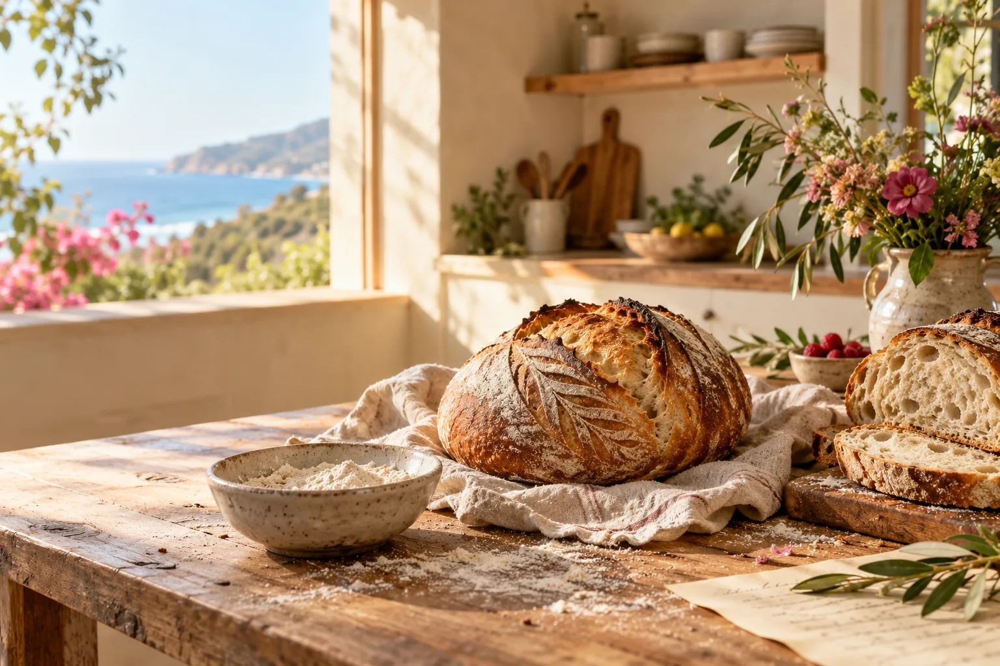
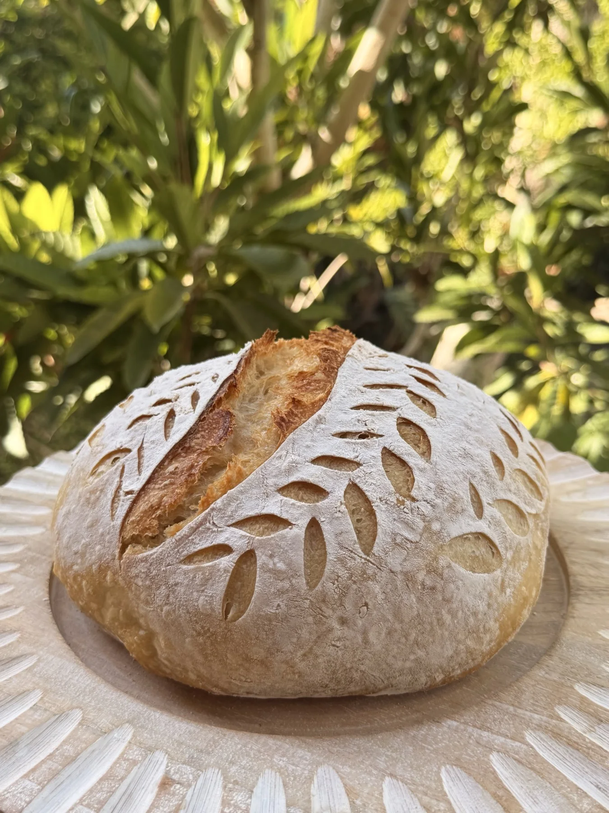
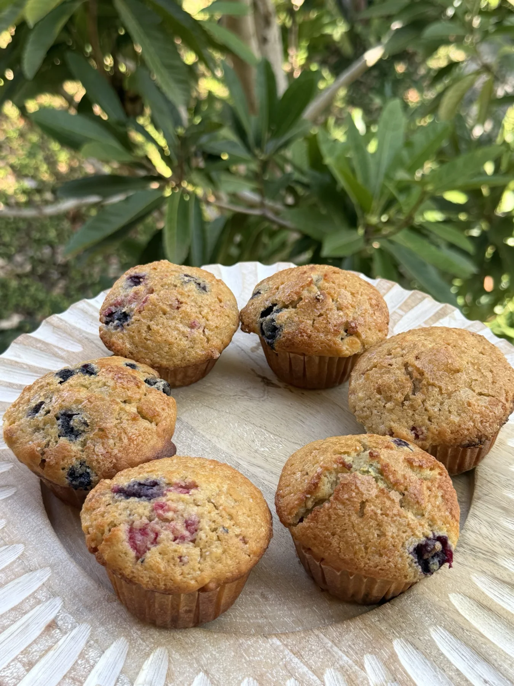
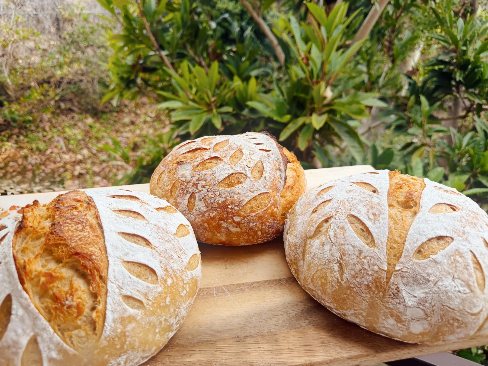
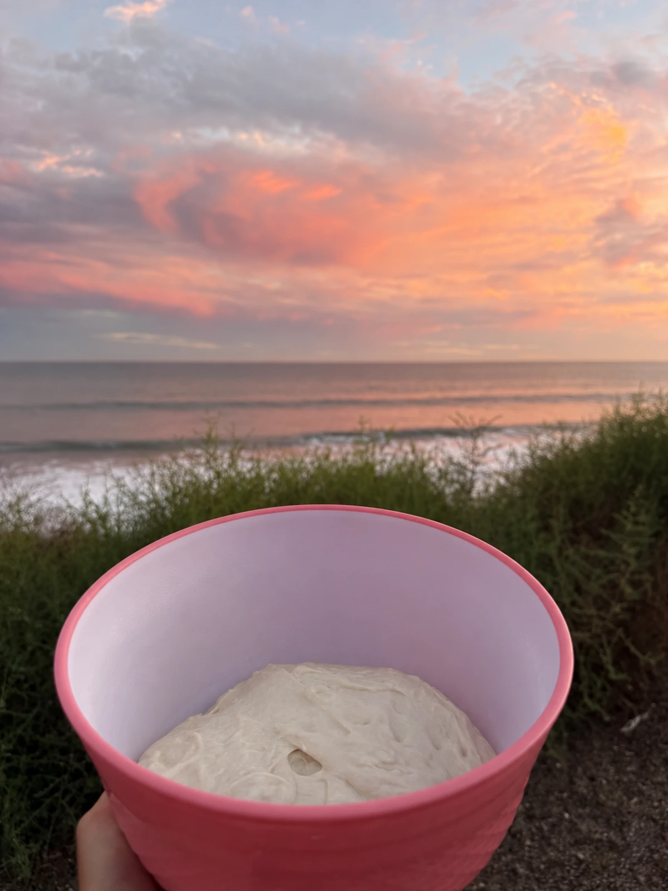

01
the everyday favorite
Country Sourdough
A deeply golden, naturally leavened loaf with a crisp crust and soft, tangy center. At home beside butter, soup, or nothing at all.
“give us this day our daily bread” · matthew 6:11
Naturally leavened sourdough and seasonal treats, mixed by hand, fermented slowly, and baked in small batches from our home kitchen.
Malibu, California · direct preorder only

come in, the bread is warmyou’re always welcome here
Crackly crust, a tender open crumb, and the kind of aroma that gathers everyone in the kitchen. Malibu Manna is a tiny home bakery inspired by coastal mornings, garden flowers, and the simple magic of sharing something warm.
from the oven
The lineup follows the season and the baker’s mood. The freshest menu and available quantities are always posted on Instagram.
the everyday favorite
A deeply golden, naturally leavened loaf with a crisp crust and soft, tangy center. At home beside butter, soup, or nothing at all.
something special
Thoughtful flavors, garden herbs, toasted seeds, and sweet or savory inclusions that change with what feels good that week.
a little extra joy
Small runs of cozy, shareable treats. Watch the weekly menu for the sweet bake coming out alongside the bread.
straight from anna’s camera



save me a loaf
Fresh drops and quantities are shared on @malibu.manna.
Tell us what you’d like and how many. We’ll confirm availability and pickup details.
Pick up your bake in Malibu and try to wait until you get home to tear into it.
not sure what to say?
Hi Malibu Manna! I’d love to order from this week’s bake. What’s still available?
make your mark
Before a loaf goes into the oven, a few careful cuts guide the way it opens. Choose a favorite pattern or sketch one of your own.
Have a scoring request for a future loaf? Screenshot your design and send it to @malibu.manna.
one loaf, 24+ hours
Mixed and folded by hand, rested overnight, then scored and baked the next day. That unhurried rhythm is where the crust, crumb, and flavor come from.
Wake up the culture and wait for it to become active and bubbly.
Flour, water, salt, and starter become one shaggy dough.
Gentle folds develop structure without knocking out the life inside.
Time and temperature guide fermentation until the dough is ready.
The refrigerator slows everything down while flavor keeps developing.
The oven and Dutch oven preheat while the cold loaf gets its final design.
Trapped steam helps the loaf expand and the crust begin to form.
Open heat brings out the deep golden color and crackly crust.
Cooling sets the crumb. Cutting too soon lets all that precious steam escape.
science behind the slice
Good bread does not need a lecture. But if you love the nerdy parts, Anna keeps notes.
Food science, not medical advice. Ingredients, methods, and individual responses differ.
the heart of it
Malibu Manna began with the simple pleasure of feeding people you love. Every bake still carries that feeling: a floured counter, something good in the oven, flowers clipped from the garden, and an extra loaf waiting for a neighbor.
We keep things intentionally small so each batch gets the time and attention it deserves.
Prepared in a home kitchen in Malibu, California.

the view from the mixing bowl
bread has always meant more
“Man shall not live by bread alone, but by every word that comes from the mouth of God.”Matthew 4:4
People were keeping living dough and passing it forward long before commercial baker’s yeast existed. Every starter carries a small piece of that ongoing tradition.
read about sourdough’s ancient storybefore you ask
Still wondering about something? Send a DM and we’ll get back to you between folds.
Bake days and menus change with the week. Follow Instagram for the next drop announcement and preorder window.
Pickup is in Malibu. The exact time and location are shared privately when your order is confirmed.
Because every batch is small, special requests depend on the bake schedule. Send a DM with what you have in mind.
Products are made in a home kitchen where common allergens may be present. Please ask about the ingredients in the specific bake before ordering.
No. Traditional wheat sourdough still contains gluten and is not appropriate for someone with celiac disease. Please review each product’s ingredient and allergen label before ordering.
The starter contains living microorganisms, but the heat of baking greatly reduces their viability. Finished sourdough bread is not generally considered a source of live probiotics.
No. Starters, flour, hydration, time, temperature, and fermentation methods all vary. Some commercial breads also use baker’s yeast or sourdough flavoring rather than relying only on a living starter for their rise.